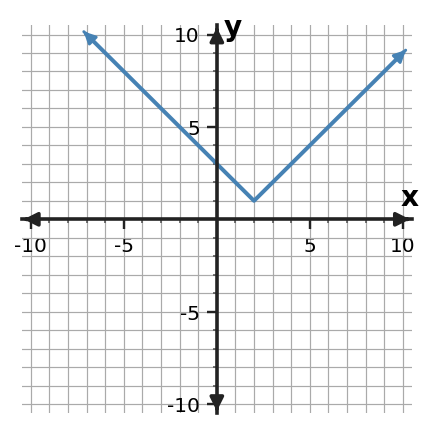
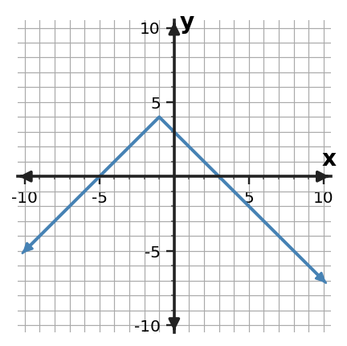
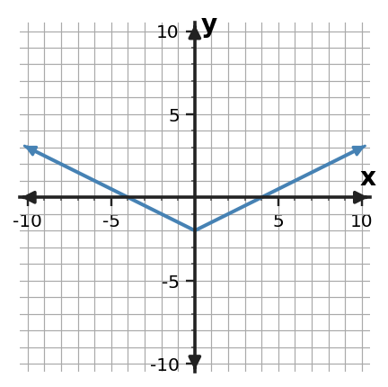

Algebra Extra Practice 1.3
1. Classify $y=-x-6$ as linear, quadratic, exponential, or absolute value and identify the equation feature that supports your choice.
2. Classify $y=x^2-6x+5$ as linear, quadratic, exponential, or absolute value and identify the equation feature that supports your choice.
3. Classify $y=5(1.5^x)$ as linear, quadratic, exponential, or absolute value and identify the equation feature that supports your choice.
4. Classify $y=|x+4|+2$ as linear, quadratic, exponential, or absolute value and identify the equation feature that supports your choice.
5. Classify the function family and cite evidence from the pattern.
| x | y |
|---|---|
| 0 | 1 |
| 1 | 3 |
| 2 | 5 |
| 3 | 7 |
6. Classify the function family and cite evidence from the pattern.
| x | y |
|---|---|
| 0 | 3 |
| 1 | 6 |
| 2 | 11 |
| 3 | 18 |
7. Classify the function family and cite evidence from the pattern.
| x | y |
|---|---|
| 0 | 1 |
| 1 | 4 |
| 2 | 16 |
| 3 | 64 |
8. Classify the function family and cite evidence from the pattern.
| x | y |
|---|---|
| -2 | 3 |
| -1 | 2 |
| 0 | 1 |
| 1 | 2 |
| 2 | 3 |
9. The outputs follow a linear pattern: 10, 8, 6, 4. Continue with two more outputs and identify the constant-change evidence.
10. The outputs follow a quadratic pattern: 9, 16, 25, 36. Predict the next two outputs and describe the square-number structure you used.
11. The outputs follow an exponential pattern: 64, 32, 16, 8. Generate the next two outputs and name the repeated multiplicative factor.
12. The outputs follow an absolute value pattern: 5, 4, 3, 2, 3. Continue the sequence through two more outputs and describe its movement away from the turning point.
13. Classify the graph by function family.

14. Describe one visible feature that supports the classification.

15. Name one equation form that could belong to the same family.

16. Explain why a different family would not fit this graph.

17. A candle becomes 2 centimeters shorter each hour. Select the best function family and connect your choice to the constant additive change.
18. A rectangular garden is always 3 meters longer than its width. Its area is modeled from the width. Select the best function family and connect your choice to how area depends on width.
19. An account balance grows by 5 percent each period. Select the best function family and connect your choice to the repeated growth factor.
20. A sensor records how far an elevation is from sea level using signed altitude. Select the best function family and connect your choice to distance from a fixed level.
21. A student says the relationship is exponential because the outputs get larger quickly. Critique the claim.
| x | y |
|---|---|
| 0 | 4 |
| 1 | 9 |
| 2 | 16 |
| 3 | 25 |
22. A student says the relationship is linear because the outputs decrease each row. Critique the claim.
| x | y |
|---|---|
| 0 | 16 |
| 1 | 8 |
| 2 | 4 |
| 3 | 2 |
23. A graph is V-shaped, and a student calls it linear because each arm is straight. Critique the classification.
24. An equation is $y=2(2.5)^x$. A student calls it quadratic because the graph bends upward. Critique the classification.